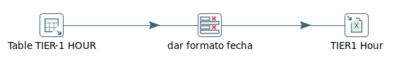
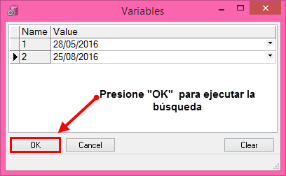

TABLERO PARTICIPACIÓN 4G CIUDAD/MERCADO¶
1) Objetivo¶
El objetivo del tablero es poder comparar la evolución de las redes 3G y 4G del vendor Nokia, por ciudad y por mercado. Se espera ver una mejora en los diferentes KPIs de 3G a medida que evoluciona el despliegue de la red 4G y más sitios son puestos en servicio comercial.
Los KPIs a visualizar son: tráfico de datos, usuarios simultáneos, accesibilidad de datos, throughput por celda, throuhgput por usuario, cantidad de nodos instalados. La sumarización de los KPIs es day week. Las ciudades a incluír son las capitales de provincia. Los mercados a incluír son los de Argentina y Paraguay.
2) Alcance¶
Áreas involucradas: Performance de Red
3) DEFINICIONES¶
FD: Fecha desde, en formato DD.MM.YYYY FH: Fecha hasta, en formato DD.MM.YYYY
4) DESCRIPCIÓN DE LOS CAMPOS¶
El nombre del tablero ciudad es: Tablero_Participacion4Gciudad
Campos para Ciudad:

El nombre del tablero mercado es: Tablero_Participacion4gmercado
Campos para Mercado:

- FECHA: FECHA DAYWEEK, corresponde al domingo de inicio de la semana, se considera que la semana comienza el domingo y finaliza el sábado.
- TRAFICO HSDPA (HSDPAMACDGB): Tráfico umts hsdpa gb
- DLR99MACDGB: Tráfico umts rl99 gb
- HSDPAACTUSERAVG: Usuarios activos umts hsdpa promedio
- ACCESIBILITYHSDPA: Accesibilidad umts hsdpa
- TRAFFICDLGPRS: Tráfico GSM GPRS DL GB
- TRAFFICDLEDGE: TRAFICO GSM EDGE DL GB
- TRAFICO LTE (TRAFFICDL4G): Tráfico LTE DL GB
- ACCESIBILITYLTE: Accesibilidad lte
- LTEACTUSERAVG (CELL_LOAD_ACT_UE_AVG): Usuarios activos lte promedio
- TRAFICO TOTAL : Tráfico umts hsdpa gb + Tráfico umts rl99 gb + Tráfico gsm gprs dl gb + Tráfico gsm edge dl gb + Tráfico lte dl gb
- PARTICIPACIÓN 4G: Trafico lte dl gb / Tráfico total
- SITIO3G_U: Cantidad de sitios 3g simple portadora
- SITIO3G_D: Cantidad de sitios 3g doble portadora
- SITIO3G_S: Cantidad de sitios 3g 4 - 6 sectores
- SITIO3G_T: Cantidad de sitios 3g tercera portadora
- SITIO3G: Cantidad de sitios 3g
- SITIO4G: Cantidad de sitios 4g
- THP_USER_3G: Throughput de usuario 3g
- THP_CELL_3G: Throughput de celda 3g
- THP_CELL_LTE: Throughput de celda 4g
- THP_USER_LTE: Throughput de usuario 4g
SERVER¶
perdido.claro.amx (10.92.50.83) a falda.claro.amx(10.92.56.198)
BASE DE DATOS¶
Oracle 10G. Instancia DSMART2
TIEMPO DE EJECUCIÓN¶
Se ejecuta los días lunes a las 15 pm (cada 7 dias)
FRECUENCIA¶
Semanal
DURACIÓN DEL PROCESO¶
2 minutos aprox
UBICACIÓN DEL PROCESO¶
calidad/Tableros/RunAllTableros.kjb
LOGUEO DEL PROCESO¶
El logueo del proceso se realiza en la ubicación calidad/tableros/PentahoLogs
5) MACRO FLUJO¶
6) TABLAS UTILIZADAS¶
- SELECT * FROM ALM_MERCADO;
- SELECT * FROM LTE_NSN_SERVICE_NE_DAYW;
- SELECT * FROM MULTIVENDOR_GPRS_DAYW;
- SELECT * FROM OBJECTS_SP_GSM;
- SELECT * FROM OBJECTS_SP_LTE;
- SELECT * FROM OBJECTS_SP_LTE_NE;
- SELECT * FROM OBJECTS_SP_UMTS;
- SELECT * FROM OBJECTS_SP_UMTS_NE;
- SELECT * FROM UMTS_NSN_HSDPA_MKT_DAYW;
- SELECT * FROM UMTS_NSN_HSDPA_WCEL_DAYW;
- SELECT * FROM UMTS_NSN_SERVICE_MKT_DAYW;
- SELECT * FROM UMTS_NSN_SERVICE_WCEL_DAYW;
- SELECT * FROM UMTSC_NSN_HSDPA_MKT_DAYW;
- SELECT * FROM UMTSC_NSN_HSDPA_WCEL_DAYW;
- SELECT * FROM UMTSC_NSN_MACD_WCEL_DAYW;
7) DESCRIPCIÓN DETALLADA¶
El Shell Script:
Los procesos .sql denominado ciudad.sql y mercado.sql:
La ejecución de los procesos nos muestra los siguientes resultados:
Cuidad:
Mercado:
8. CONTROL DE CAMBIOS¶
| Fecha | Responsable | Ticket Jira | Detalle | Repositorio |
|---|---|---|---|---|